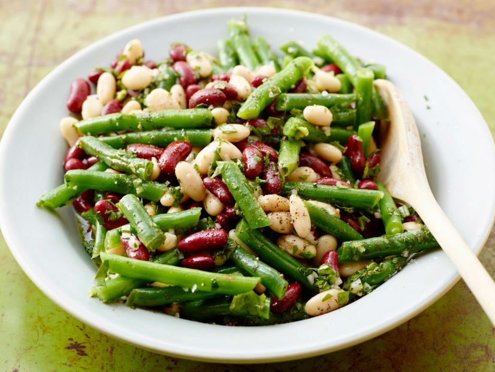

Three Beans Salad Recipe

Description
This is a quick html project.I've always been a fan of Nigeria brown beans(brown cowpeas) as a Nigerian, getting to know three beans salad is interesting, and I'm happy to explore this nice recipe.
It's greatly rich in protein, fibre, folate, iron, potassium and low in fat, which compliment a heart healthy diet and make it a well-rounded salad recipe
Ingredients:
- Kosher salt
- Ice
- 8 ounces fresh green beans (about 2 cups), washed and cut in half
- 1/4 cup sherry vinegar
- 2 teaspoons Dijon mustard
- 1 tablespoon honey
- 1/2 cup extra-virgin olive oil
- One 15-ounce can cannellini beans, rinsed and drained
- One 15-ounce can red kidney beans, rinsed and drained
- 1/4 cup fresh basil leaves, chopped
- 1/4 cup fresh flat-leaf parsley leaves, chopped
- 1 shallot, minced
- Freshly ground black pepperChicken wings, separated at joint, tips discarded
- Cooking pot
Preparations:
- Bring a pot of salted water to a boil.
- Set up a large bowl of ice water.
- Add the green beans to the pot and cook until crisp-tender, 2 to 3 minutes.
- Drain and plunge the green beans into the ice water to stop the cooking.
- Drain the green beans.
- Whisk the vinegar, mustard and honey in a large bowl.
- Whisk in the oil until emulsified.
- Add the green beans, cannellinis, kidneys, basil, parsley and shallots to the bowl and toss to coat.
- Sprinkle with salt and pepper and serve.
back to top